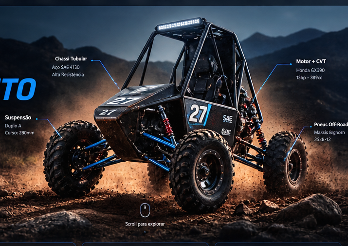
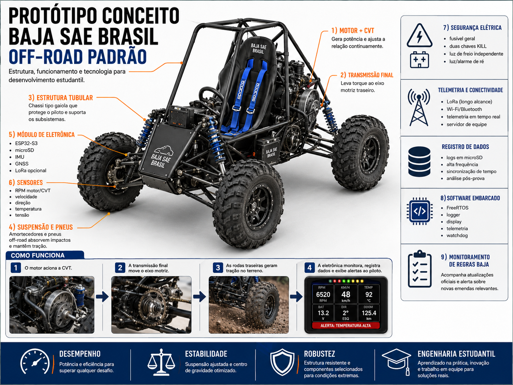
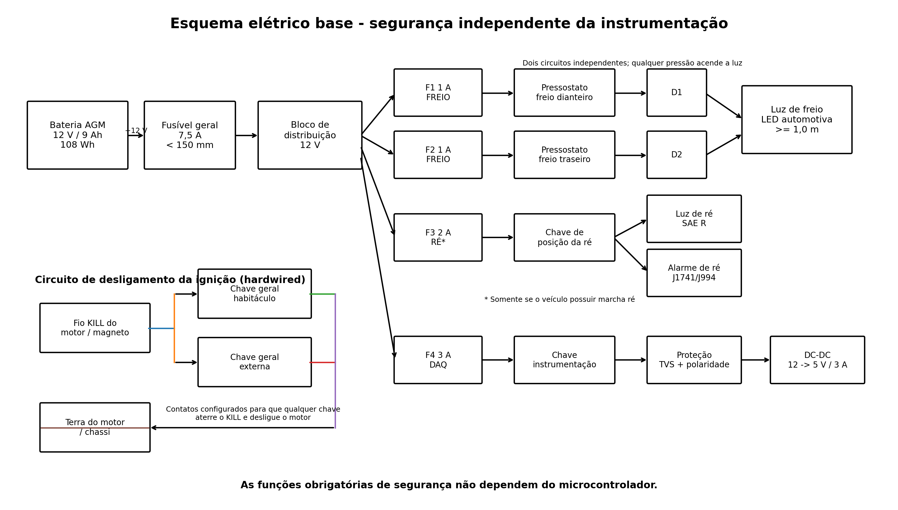
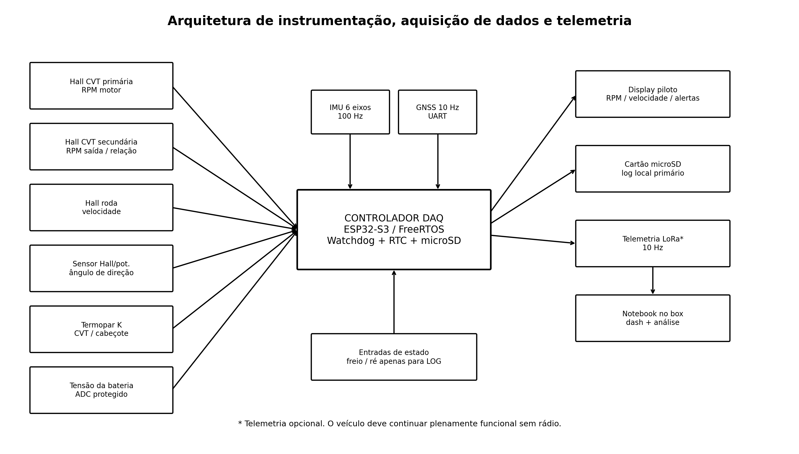
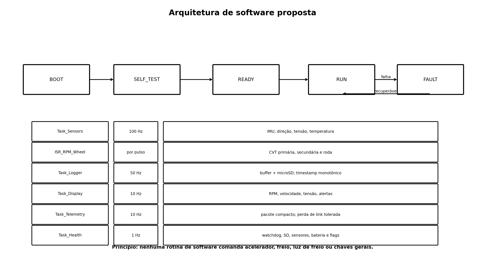

EstruturaGaiola tubular e proteção do piloto
↗ ENGENHARIA • OFF-ROAD • TELEMETRIA
PROJETO
BAJA SAE
Um conceito técnico de veículo off-road padrão Baja, reunindo estrutura tubular, suspensão, transmissão CVT, eletrônica embarcada, aquisição de dados e validação orientada pelas regras da competição.
4rodas off-road
12 Vrede de instrumentação
100 Hzaquisição IMU
ESP32-S3DAQ principal

Chassi tubular Motor + CVT Suspensão Monitoramento SAE ativo
REGRA BASERATBSB — Emenda 7Nacional 2027
PRÓXIMO MARCO30/09/2026Desafio Técnico TV — Parte 1
SuspensãoCurso, absorção e contato com o solo
↗TransmissãoMotor, CVT e redução final
↗EletrônicaSensores, logger e display
↗SegurançaProteções e circuitos independentes
↗PROTÓTIPO INTERATIVO
Explore o Baja em 3D
Arraste para girar, use a roda do mouse para aproximar e destaque os subsistemas. O modelo é esquemático e serve para estudo de arquitetura.
MODELO 3D ESQUEMÁTICOVISÃO COMPLETA
Arraste para girar • Scroll para zoom
Estrutura Suspensão Powertrain Eletrônica
COMO FUNCIONA
Do motor ao solo
O fluxo abaixo mostra, de forma simplificada, como energia mecânica e informações eletrônicas percorrem o veículo.

01
Motor + transmissão CVT
O motor entrega torque à polia primária. A correia da CVT transmite potência para a polia secundária, variando a relação conforme rotação e carga. A redução final leva o torque ao eixo motriz.
- Motor fornece potência.
- CVT adapta automaticamente a relação.
- Redução final multiplica o torque.
- Rodas traseiras geram tração.
02
Suspensão independente
As bandejas controlam o movimento das rodas e os amortecedores dissipam energia dos impactos. O objetivo é preservar contato do pneu com o solo, estabilidade e controle.
- Bandejas guiam a roda.
- Mola sustenta a massa.
- Amortecedor controla oscilações.
- Geometria influencia estabilidade.
03
Sistema de direção
O volante transfere movimento ao mecanismo de direção e às barras, alterando o ângulo das rodas dianteiras. Geometria e folgas devem ser controladas para garantir precisão e segurança.
- Entrada pelo volante.
- Mecanismo converte o movimento.
- Barras acionam as mangas.
- Rodas esterçam de forma coordenada.
04
Sistema de freios
O pedal pressuriza o circuito hidráulico e os cálipers convertem pressão em força de frenagem nos discos. A instrumentação pode registrar estado e pressão sem assumir funções críticas.
- Piloto aplica força no pedal.
- Cilindro mestre gera pressão.
- Cálipers comprimem pastilhas.
- Discos dissipam energia.
ELETRÔNICA EMBARCADA
Instrumentação + telemetria
Um painel de teste simula o comportamento da aquisição de dados. Os valores são demonstrativos e não representam medições reais.
TELEMETRIA SIMULADA
LIVEDados em tempo real
3820RPM
28km/h
12.6V
Temperatura82 °C
Inclinação7.4°
ARQUITETURA
Fluxo de dados
SensoresRPM • roda • direção • temperatura
→
ESP32-S3DAQ + FreeRTOS
→
microSDlog local
Displayalertas
LoRaopcional
Princípio de segurança: funções críticas não devem depender do software de instrumentação.
01
Esquema elétrico

02
Instrumentação

03
Software

MATERIAIS
BOM eletrônica inicial
Componentes base para um sistema de instrumentação. A seleção final deve considerar disponibilidade, vibração, temperatura, vedação e regras vigentes.
MONITORAMENTO
MONITORAMENTO ATIVO
Regras Baja SAE
O site mostra o estado conhecido; a tarefa agendada no ChatGPT realiza a verificação recorrente e envia alertas quando houver mudança relevante.
REGRA BASE DA NACIONAL 2027VIGENTE
RATBSB — Emenda 7
Adotado para a 32ª Competição Baja SAE BRASIL — Etapa Nacional 2027. Alterações específicas podem ser comunicadas por novos informativos oficiais.
30 SET 2026
Entrega da Parte 1 do Desafio Técnico TV.
--dias
--horas
--min
Verificação recorrenteAtiva
Fonte prioritáriaSAE BRASIL
EscopoRegras + informativos
NotificaçãoSomente mudança relevante
Abrir informativos oficiais ↗